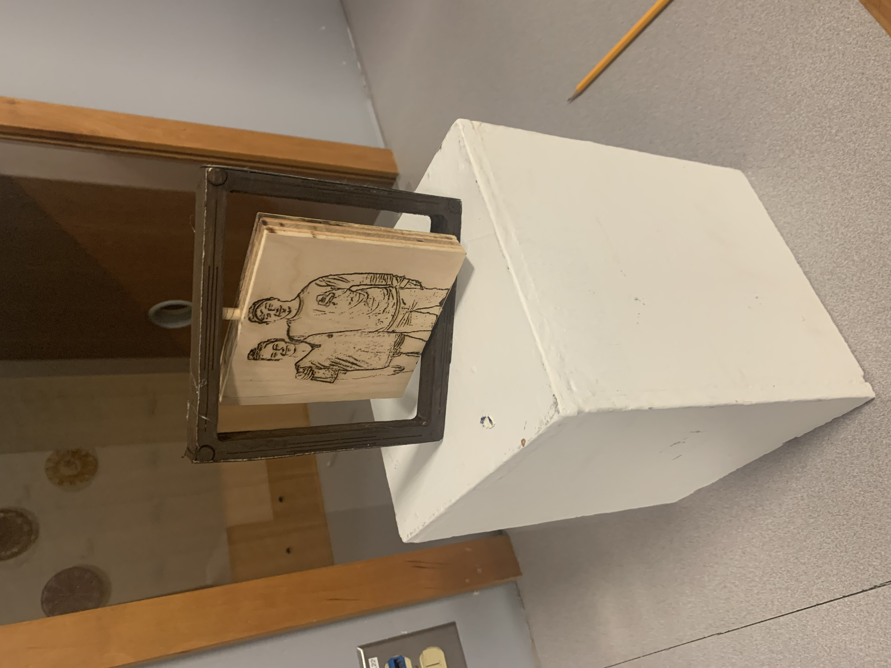

One more project to go! This project is a lot different compared to our other projects, becuase this time the whole design and project desription is up to us.
My ideas on the project: For this project, like most of my projects this year, I wanted to build something that I could give away as a christmas gift. I knew I was givng the acrlic Light Picture to my brother and the idea of a photo was in my mind when I decieded to try and make a cool wood burned picture and picture frame. The orginal Idea was pretty bland, but it started to get excited when I thought of the idea of making it spin. For materials I'm going to be using the same piece of wood that I used for the desk orginizer, and cutting a smaller rectangle inside of it. From there I can add some bearing and some pegs drilled into the top and bottom of the frame to make the smaller rectangle into the actual picutre that can spin showing both sides. As for tools I plan on using I intend on using the shaper to create the frame itself and do some design work, I plan on using the laser cutter to cut design elements and the picture into the wood. For stability I will also use the 3D printer to cut a small footprint holder to keep the stand up. To make it extra pretty I'm going to stain the wood. Prepping the Images
I have the process of turning images into stencils down to a science at this point. I opened my image in Paint 3D and cut away the background, then threw it into my online converter Rapid Resizer to create the lines. The exported CAD JPEG's are below
My first prototype for a print came out okay! I might thicken up some of the lines but im not sure yet
Prototype 2: Weeding out the IssuesMy plan for this prototype was essentially just to make sure that my idea would work, and refresh my skills on the shaper and laser cutter. To start, I took a piece of wood that was going to be the same size as my final cut, and meausured out a rectangle for my Picture Area. Placed the rectangle using the automatic Rectangle Tool on the Shaper, and started to cut it out. After three passes at .25 inches I had my picture and frame seperated, and my first issue. The area I had planned to use was way to long for a photo to be printed on without stretching it, the base is way thicker then I wanted. I'll have to resize and shape my picture surface into a square next time. The next step was lazer printing the photos onto the wood which is where I faced another big problem. The laser head only had 0.5 inches of clearence, and the wood was .75 inches thick. Next time I'll have to shape the wood down, but for now I took a piece of scrap wood and put my images on that, and glued it into the wood.
Time to get cutting! I started off on the Shaper, which is where I hit another roadblock...We didnt have any wood! While unfortunate, this problem made me pause and think about the size I wanted my piece to be. Up until now I was thinking about doing a 1 foot by 1 foot becuase the size of a small art work yo would frame and put up. I decided to revise my design slightly by scaling it down, becuase in order for the spinning mechninism to work this piece should be placed on a surface like a desk, which justifies a more compact design in order to save space.
This smaller design meant that I had to lower my expectations on what I wanted my frame decorations to be, which is honestly probably a good thing. My idea originally sort of inspired by the structure of a roman collum, and while this overall theme stayed true I did have to cut down on the planned gaudy flowers I was putting on. Instead I just went with the basic structure of the collum lines and circles.
Shape it!Cutting the square with the Shaper was a bit more of a struggle then it should have been. For starters my simple lines and circles I had designed to be easy were apperently too nice and straight for the Shaper, and it instead decided to make them squiggly and in different depths. The circles were even worse, as they had lots of bumps and things that shouldnt have been there. I fixed most of these issues by doing another cut at a deeper depth, but the circles were too far gone. It was at this stage that I decided to leave one corner open so If I wanted to I could use an Aligator Clip to hold the frame up for decoration. Thinking back I realize that this was probably not a great idea artistically, but I dont mind it that much.
The next step was to get some sandpaper and remove shave down the hairs the shaper left behind.
Engrave it!After cutting with the shaper it was time to move to the laser cutting. From there I had another issue of my wood being to thick to cut in the shaper, but it was okay becuase Tuna helped me remove the bottom tray in a way that wouldnt burn down the lab. After laser cutting my image I flipped it over and did the same thing on the other side.
Stain it!With my pieces prepped and ready it was time to make this into something cool. I stained the outside, and while it took a couple coats and came out a bit darker then I would have liked it's still something i'd rate at a 7/10 on the Cool Scale. I then stained the picture pieces which came out awesome. I really liked the bright color, and almost wish I went with that color for the whole design.
Drill It!Drilling was a super nerveracking part of the design becuase I knew that one simple error would mess up the entire project. I first measured out the middle point on the frame and the photo pieces, and went to the Sculpture studio to borrow some drill bits. I started with a 1/8th inch bit, and drilled a small hole in the bottom and a deeper hole in the top of the frame, and matching small holes in the picture. I then hit each hole very slowly with the 1/4in bit until the whole was the same size as my dowel. I heard a little bit of wood splitting while working on this part but there were no noticable cracks.
Final Project, Assemble!The last piece of fabiraction for this project was to cut two 1cm pegs from the dowel, which I managed to do with with massive forearm strength and a pair of sizzors. My plan was to put the top peg into the deeper frame hole and picture hole first and then while holding the picutre up place the bottom peg in. This plan worked more then I expected, and the project fits together better then any lego set I built at home. I cut out the veneer strips and put them on the sides of the frame, stained them, and voila, a finished project!
 ReflectionWhile my art isnt gorgeous, and certainly wont win me any awards I'm still really proud of it. I think the design process mirrors my personality in some ways; I tend to roll with the punches and think that all roadblocks are blessing's in disguise. There wasnt any full sized pieces of wood? No worries, a smaller piece is actually more practical. The stain I used is too dark? All good, I'll stain the inside a different color and make a cool color combination that will match the floor in my girlfriends room. I think I learned a lot from this project and I'll use these lessons to make a similar gift for my Mom, so hopefully I can find a way to make it a bit prettier becuase shes more unforgiving then my girlfriend. Another thing is I'm not an artist, so what I came up with is probably the best looking handmade item I've ever made.
PhotoLog: DESIGN FILES HERE